Mes costumes !
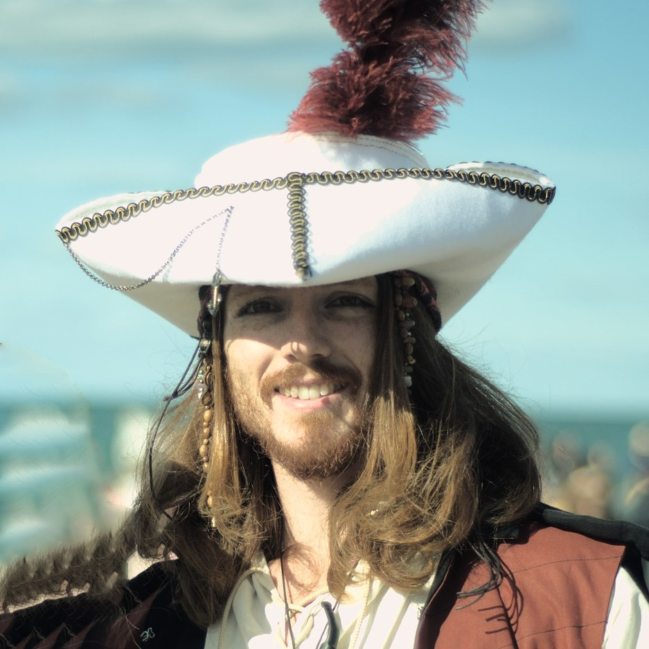

 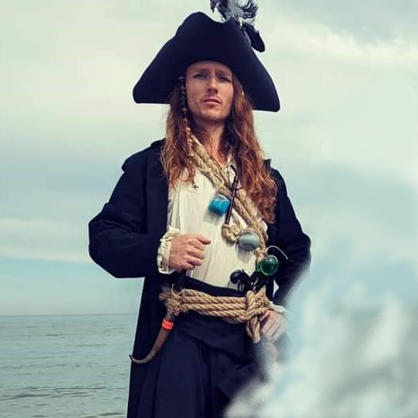
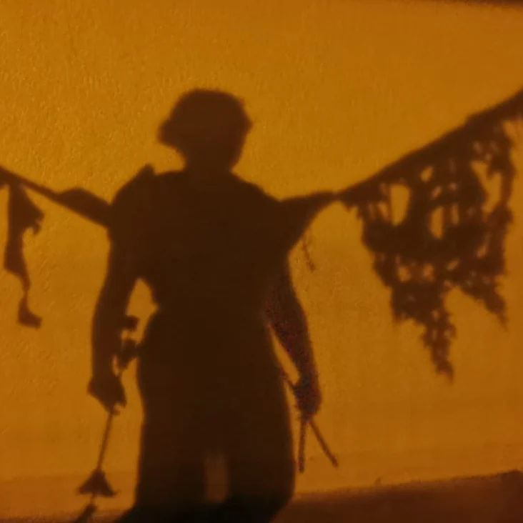
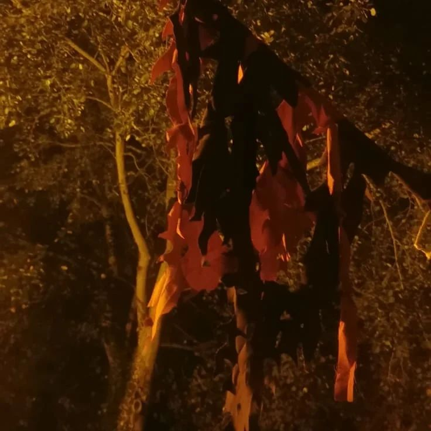
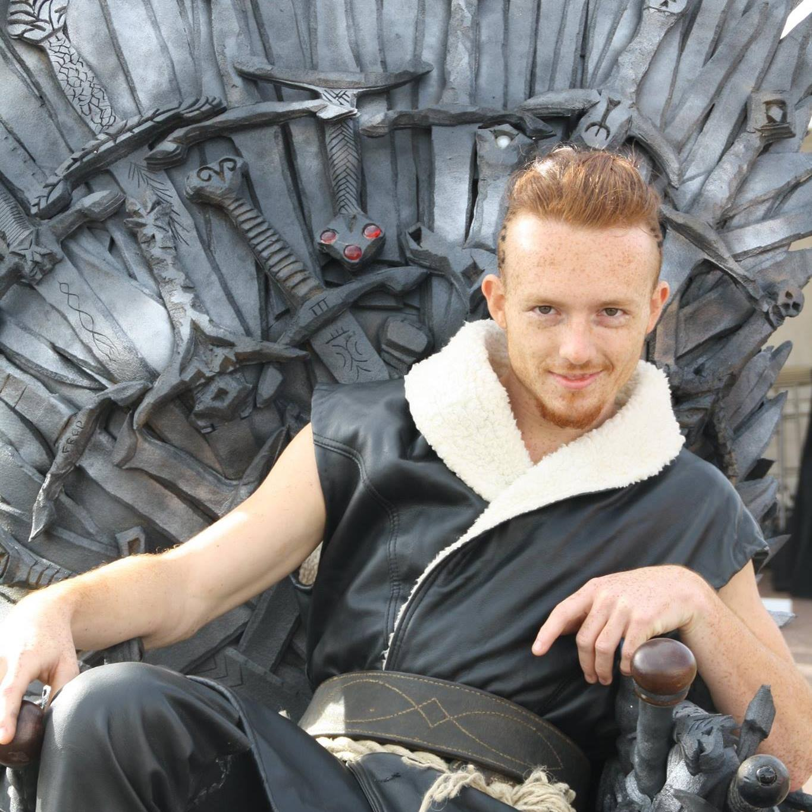
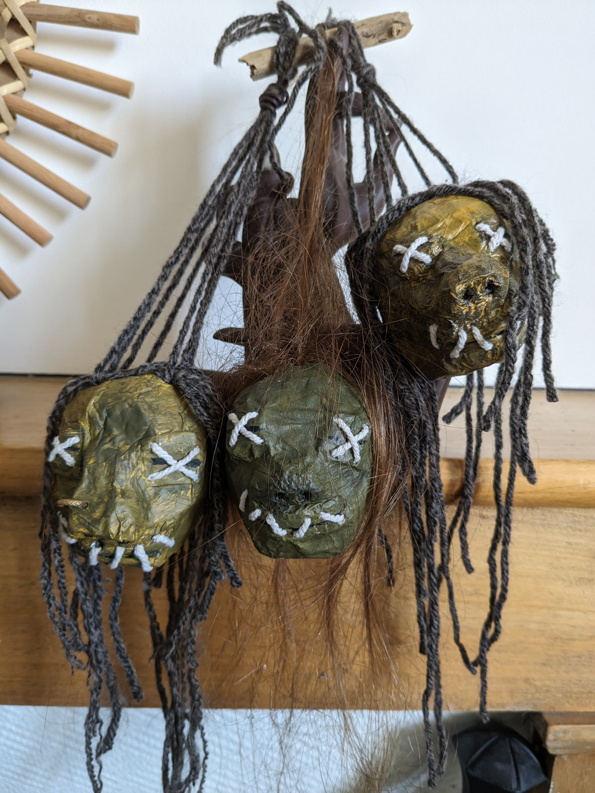
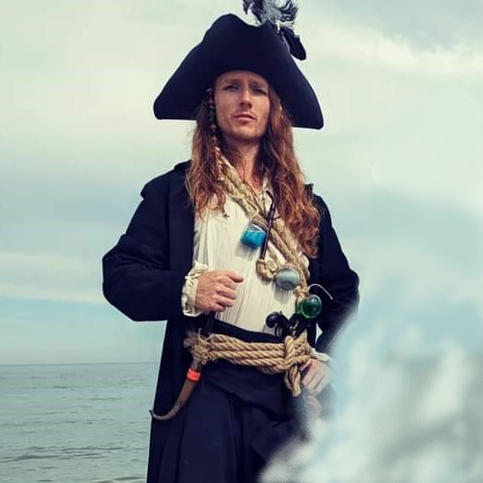
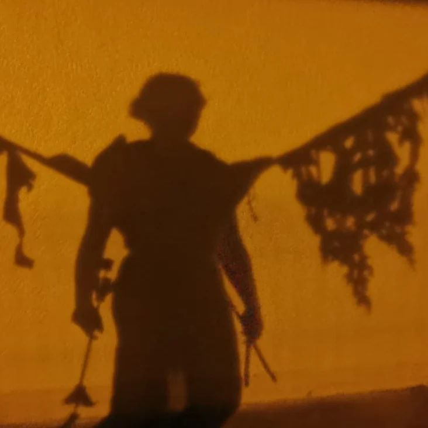
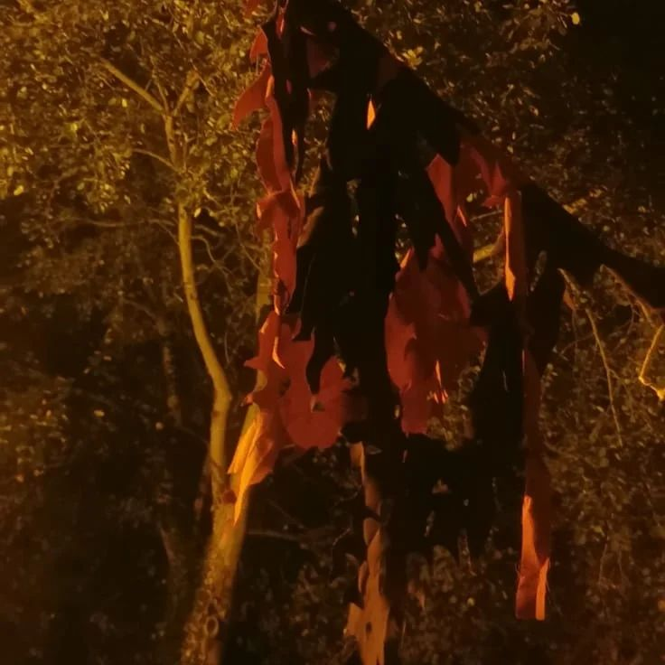
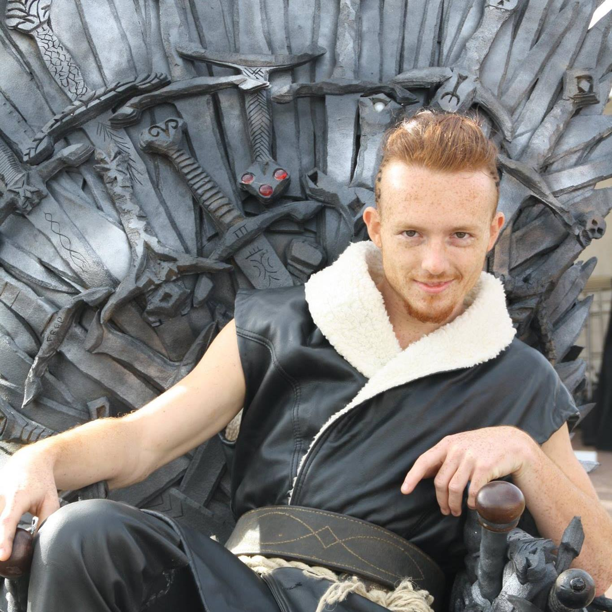
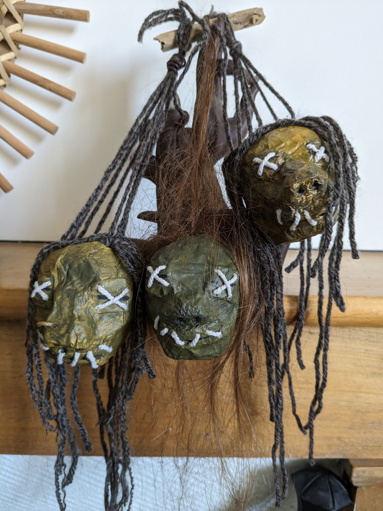
Mon dernier costume! Celui qui m'a demandé le plus d'investissement:
- Chapeau fabriqué à la machine à coudre
- Manteau fabriqué à la machine à coudre
- Chemise cousue entièrement à la main
- Fioles remplies avec divers produits ménagers (et scellées avec de la colle pour ne pas moisir!)
- Têtes réduites en papier-maché, sculptées dans... une frite de bain!
- Divers accessoires trouvés en vide-grenier
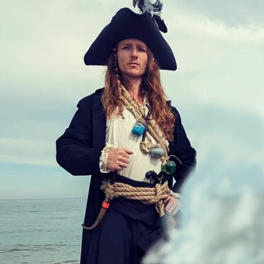
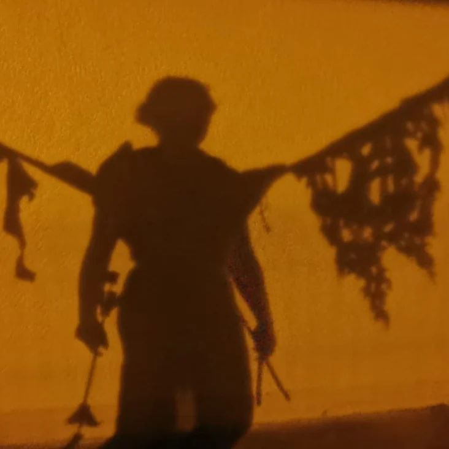
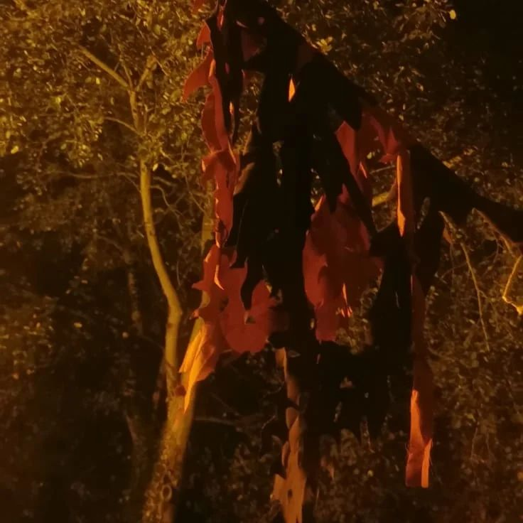
Pour mon tout premier spectacle, "Le Passeur", j'ai créé des ailes amovibles pour incarner ma représentation de la mort. Cela m'a demandé de l'ingéniosité, de la précision, mais surtout ... SURTOUT beaucoup de patience.
Mon tout premier costume (non, je ne me suis pas rasé sur les côtés uniquement pour le costume)! Fan des premières saisons de la série Vikings, je n'ai pas pu m'empêcher de commencer par là! Puis j'ai vu Black Sails... Vous connaissez la suite!
Mon premier costume de pirate ! Ma grande fierté sur ce costume: le chapeau, que j'ai cousu à la main ! Même si je dois admettre que la prothèse latex a été dure à supporter toute le journée.